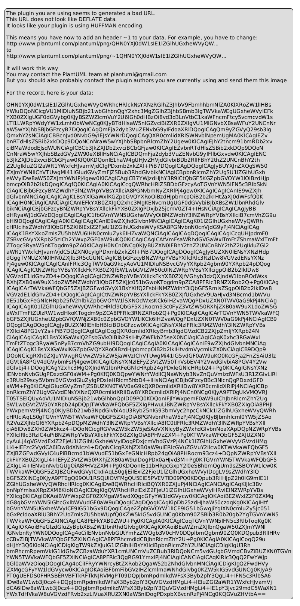
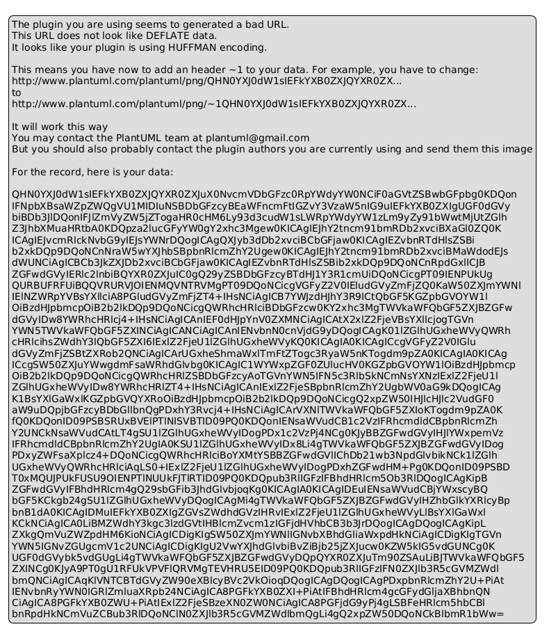
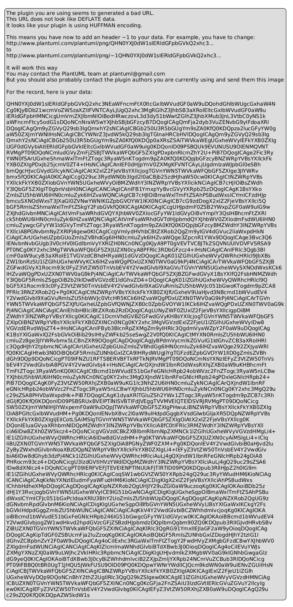

🎯 UML 2.5 Class Diagrams - Media Player Adapter Pattern
📋 Project Information
Framework: .NET 8Language: C# 12.0
Design Pattern: Adapter Pattern (GoF)
Testing Framework: MSTest
UML Standard: UML 2.5 Compliant
📚 UML Reference
Reference Documentation: UML 2.5 Diagrams Overview - uml-diagrams.orgAll diagrams follow UML 2.5 specification standards for class diagrams
📊 Enhanced UML 2.5 Class Diagram - Complete System

Comprehensive UML 2.5 compliant class diagram featuring:
• Complete package organization with stereotypes
• Detailed method signatures with constraints
• Proper UML 2.5 relationship notations
• External dependencies and system classes
• Pre/post conditions and class invariants
• Detailed method signatures with constraints
• Proper UML 2.5 relationship notations
• External dependencies and system classes
• Pre/post conditions and class invariants
🎯 Core Adapter Pattern Structure

Focused view of the Adapter pattern core highlighting:
• Target interface (IMediaPlayer)
• Adapter implementation (MediaPlayerAdapter)
• Adaptee legacy system (LegacyMediaPlayer)
• Client interaction patterns
• Clear collaboration constraints
• Adapter implementation (MediaPlayerAdapter)
• Adaptee legacy system (LegacyMediaPlayer)
• Client interaction patterns
• Clear collaboration constraints
🔍 Detailed Implementation View

Implementation-focused diagram showing:
• Complete method signatures with visibility
• Detailed constraints and pre/post conditions
• Test infrastructure architecture
• Exception handling relationships
• Comprehensive attribute specifications
• Detailed constraints and pre/post conditions
• Test infrastructure architecture
• Exception handling relationships
• Comprehensive attribute specifications
📐 Additional UML Diagrams
Sequence Diagram

Method execution flow and interaction timeline
Pattern Structure

Classic GoF Adapter pattern relationship view
🎨 UML 2.5 Features Demonstrated
- Stereotypes: <<interface>>, <<concrete>>, <<TestClass>>, <<external>>
- Visibility: Public (+), Private (-), Protected (#)
- Properties: {readonly}, {virtual}, {override}, {static}
- Relationships: Realization, Composition, Inheritance, Dependency
- Multiplicities: "1" to "1" relationships with role names
- Constraints: Pre/post conditions, class invariants
- Packages: Namespace organization with dependencies
- Notes: Pattern explanations and behavioral constraints
🏗️ Pattern Analysis
Adapter Pattern Components
- Target (IMediaPlayer): Defines domain-specific interface for Client
- Adapter (MediaPlayerAdapter): Adapts Adaptee interface to Target interface
- Adaptee (LegacyMediaPlayer): Existing interface that needs adapting
- Client (MediaPlayerTests): Collaborates with objects via Target interface
UML 2.5 Relationship Types Used
- Realization (⟨|⋯): MediaPlayerAdapter implements IMediaPlayer
- Composition (◆—): MediaPlayerAdapter contains LegacyMediaPlayer
- Inheritance (⟨|—): TestLegacyMediaPlayer extends LegacyMediaPlayer
- Dependency (⋯>): Usage relationships and exception throwing
Benefits Demonstrated
- Interface Compatibility: Legacy system works with modern interface
- Code Reuse: Existing LegacyMediaPlayer functionality preserved
- Separation of Concerns: Clear responsibility boundaries
- Testability: Comprehensive test coverage with mock objects
- Extensibility: Easy to add new adapters for different legacy systems
📁 File Organization
PlantUML Sources:• UML_ClassDiagram.puml (Enhanced version)
• UML_AdapterPattern_Core.puml (Core pattern)
• UML_DetailedImplementation.puml (Implementation details)
Generated PNG Images:
• UML_ClassDiagram_Enhanced.png
• UML_AdapterPattern_Core.png
• UML_DetailedImplementation.png
Generation Script: Generate-UML-PNG.ps1